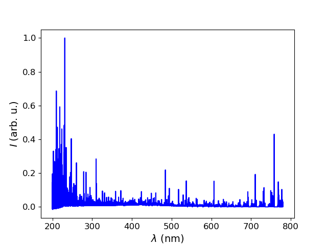
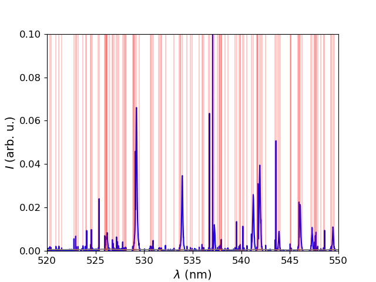
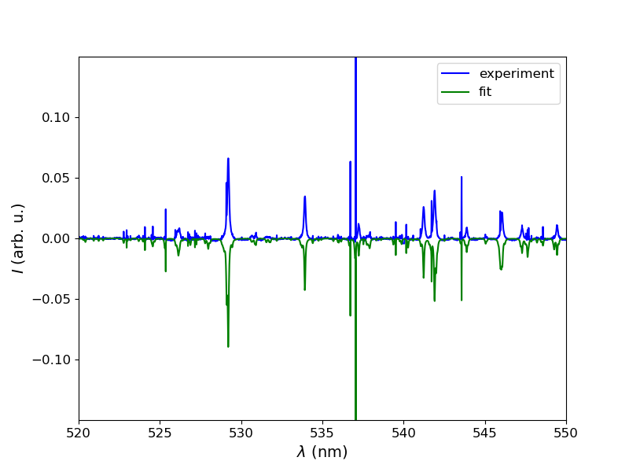

PuPlasAn (Pulsed Plasma Analyser)¶
The program is responsible for a complete numerical analysis of pulsed plasma spectra, i. e. filtering (filters.py), estimating noise level (noise.py) and spectral baseline (bline.py), and detecting spectral lines and/or bands (pdetect.py). The peaks detected may then undergo deterministic or stochastic numerical fitting of line or band profiles (pfit.py). Optical depth and spectral line broadening issues may be dealt with by using broad.py.
Next, several procedures based on applying the Boltzmann law can be used to evaluate plasma distribution temperature(s) with bolplot.py. Spectroscopic diagnostics of the transitions observed may be defined ad hoc or using a class pbase.py. Based on similar relations and approaches, abund.py performs stepwise elemental and speciation analyses of an LTE pulsed plasma. Alternatively, such properties may be extracted from a solution to radiative transfer equations (rte.py).
Finally, rate.py and mechanism.py calculate reaction rate coefficients based on user-defined data (rdbase.csv with a ReadMe file) and cover simpler kinetic modelling of the plasma systems investigated with time-resolved spectroscopic methods.
Example¶
#!/usr/bin/python
# -*- coding: utf-8 -*-
#example.py
#Vojtěch Laitl et all at J. Heyrovsky Institute
#of Physical Chemistry, CAS,
#Czech Republic, 2022
import sys
import os
import subprocess
import shlex
import string
from string import Template
import time
import csv
import numpy as np
from scipy.optimize import curve_fit
import pylab as pl
pl.ion()
import warnings
warnings.filterwarnings('ignore')
def assig_database(species,lines):
i = 0
mu = []
aij = []
eu = []
gu = []
for i in range(len(lines)):
index = lines[i][1]
m = species[index,0]
a = species[index,1]
en = species[index,2]
g = species[index,3]
mu.append(m)
aij.append(a)
eu.append(en)
gu.append(g)
return mu,aij,eu,gu
def assig_peak(matrix,lines):
i = 0
a0 = []
for i in range(len(lines)):
index = lines[i][0]
a = matrix[index]
a0.append(a)
return a0
#customised functions translating database inputs
def gauss(wl, mu, a, fwhm):
sigma = fwhm/2.35482
return ((1./(sigma * np.sqrt(2.*np.pi))) *
np.exp(-0.5 * ((wl - mu)/sigma)**2)) * a
def lorentz(wl, mu, a, fwhm):
gamma = fwhm/2.
return ((1./np.pi) * ((0.5*gamma)/((wl - mu)**2 +
(0.5*gamma)**2))) * a
def pseudovoigt(wl, mu, a, fwhm, s=0.2):
g = gauss(wl, mu, 1., fwhm)
l = lorentz(wl, mu, 1., fwhm)
return ((1. - s)*g + s*l) * a
def fitpeak(wl, I, p0, checkplot=False):
popt, pcov = curve_fit(pseudovoigt, wl, I,
p0=p0,maxfev=100000)
if checkplot:
pl.ion()
pl.cla()
pl.plot(wl,I,'b.-')
pl.plot(wl, profiles[profile](wl, *popt), 'r')
pl.draw()
print(pcov)
perr = np.sqrt(np.diag(pcov))
return popt, pcov, perr
#basic line profile functions to be fitted
def sw(a0,a1,a2,T):
return 10**(a0+a1*np.log10(T)+a2*np.log10(T)**2)
#computation of Stark widths using fitting constants
#stored in Stark-B database http://stark-b.obspm.fr/
#assuming the program is stored in a preceding
puplasan_path = '../'
#directory (as copied from GitHub) -- to be changed accordingly
sys.path.append(puplasan_path)
sample = 'Xe_spectrum.dpt' #spectral sample to be evaluated
import puplasan
import puplasan.pfit as pf
import puplasan.bolplot as bp
import puplasan.noise as ns
import puplasan.bline as bl
import puplasan.pbase as pb
import puplasan.pdetect as pd
import puplasan.abund as ab
import puplasan.assign as assig
import puplasan.broad as sbm
#Welcome to the program "puplasan" made
#by Vojtěch Laitl et all
#at J. Heyrovsky Institute of Physical Chemistry,
#CAS, Czech Republic, 2020.
#Below you can find an example program script.
#The script guides you through an example evaluation
#of an emission UV-ViS LIBS plasma spectrum
#(LIPS of Xe+H2 1:1 mol. gas)
#The lines below are responsible for loading a spectrum file,
#its fitting, and elemental and physical characterisitcs.
XeI_lines = np.loadtxt('Xe_I_lines.dat')
XeII_lines = np.loadtxt('Xe_II_lines.dat')
#loads a translated database input from the NIST database
#https://www.nist.gov/pml/atomic-spectra-database
#(transition probabilities against wavelength)
lines_all = [
XeI_lines,
XeII_lines
]
spec = [
'XeI',
'XeII'
]
spec_ne = [
'XeI'
]
g0_ne = [
1.
]
spec_ion = [
'XeII'
]
g0_ion = [
4.
]
#defines a set of species involved, respectively comprising
#all species, excited neutrals, and ions
#gives degeneracies of 0-th energy levels correspoding
#to all species present (neutral atoms and ions separately)
linelist = {spec[i]:lines_all[i] for i in range(len(spec))}
#species used to calculate electron number density
spec_el_dens = 'XeII'
#species used as a reference for CF analysis
spec_ref = 'XeII'
stark_path = 'stark_'+spec_el_dens+'.dat'
stark_params = np.loadtxt(stark_path,skiprows=4,
usecols=[6,7,8],delimiter=';')
wl_stark_ne = np.loadtxt(stark_path,skiprows=4,
usecols=4,delimiter=';')/10.
#loads a translated database input from the Stark B database
#(temperature-dependent Stark widths against wavelength)
width_stark_ne = sw(stark_params[:,0],stark_params[:,1],
stark_params[:,2],10000.)
#calculates Stark widths based on the database-defined
#formula (T=10000 K is a guessed value)
spe = np.loadtxt(sample, skiprows=1)
#loads a spectrum to be plotted
pl.plot(spe[:,0],spe[:,1]/max(spe[:,1]),'b')
pl.xlabel(r'$\lambda$ (nm)', size=14)
pl.ylabel(r'$I$ (arb. u.)', size=14)
pl.tick_params(labelsize=12)
pl.savefig('spectrum.png')
pl.close()
d_max = 0.05 #tolerance of peak assigning procedure
fwhm0 = 0.02355 #FWHM estimate (nm)
noise = ns.noise_estim_ma_xdependent(spe[:,0], spe[:,1],
61, 100, 8, m=10, k=1)
b = bl.base(spe[:,0],spe[:,1],101,noise)
spe[:,1] -= b
px, py = pd.detect(spe[:,0], spe[:,1], 3.*noise,
1., ptype='up', fulloutput=False)
#estimates the noise level
#subtracts baseline signal
#detects spectral line peaks
pl.plot(spe[:,0], spe[:,1]/max(spe[:,1]), 'b')
pl.plot(spe[:,0], 0.1*b/max(spe[:,1]),'gray')
for i in range(len(px)):
pl.axvline(px[i],c='r',alpha=0.2)
pl.xlim(520,550)
pl.ylim(0,0.1)
pl.xlabel(r'$\lambda$ (nm)', size=14)
pl.ylabel(r'$I$ (arb. u.)', size=14)
pl.tick_params(labelsize=12)
pl.savefig('spectrum_analysed.png')
pl.close()
fit_spect = pf.peak_model(px,py,spe,'ifc')
#fits an example spectrum
pl.figure(figsize=(8,6))
pl.plot(spe[:,0], spe[:,1]/max(spe[:,1]),
'b', label='experiment')
pl.plot(spe[:,0], -fit_spect/max(fit_spect),
'g', label='fit')
pl.xlim(520, 550)
pl.ylim(-0.15,0.15)
pl.yticks([-0.1,-0.05,0,0.05,0.1])
pl.xlabel(r'$\lambda$ (nm)', size=14)
pl.ylabel(r'$I$ (arb. u.)', size=14)
pl.tick_params(labelsize=12)
pl.legend(loc='upper right', prop={'size': 12})
pl.savefig('spectrum_compared.png')
pl.close()
ne_ = linelist[spec_el_dens]
wl_ne = ne_[:,0]
lines_ne = assig.assign(px,wl_ne,d_max)
mu_ne,aij_ne, eu_ne, gu_ne = assig_database(ne_,lines_ne)
a_ne = assig_peak(py,lines_ne)
#assigns selected spectral lines
#to compute electron number density
fw_ne = []
for j in range(len(mu_ne)):
p0 = [mu_ne[j],a_ne[j],fwhm0]
fitted_ne = fitpeak(spe[:,0], spe[:,1], p0)
fw = fitted_ne[0][2]
fw_ne.append(fw)
#pre-estimates the linewidth of selected spectral lines
sigma_stark_ne = sbm.assign_stark(fw_ne, wl_stark_ne, mu_ne)
fwhm_stark_ne = 2.355*np.array(sigma_stark_ne)
N_e, N_e_stddev = sbm.stark2ne(fwhm_stark_ne,width_stark_ne)
#assigns the inspection spectral lines and calculates
#the electron density with uncertainty
C_I, C_I_stddev, Q_I = [], [], []
for k in range(len(spec_ne)):
spec_ = linelist[spec_ne[k]]
gu_ = spec_[:,3]
eu_ = spec_[:,2]
wl = spec_[:,0]
lines = assig.assign(px,wl,d_max)
mu,aij, eu, gu = np.array(assig_database(spec_,lines))
a = assig_peak(py,lines)
logbp = bp.logbp(mu,a,aij,gu)
T, T_stddev = np.abs(bp.T(np.asarray(eu),
np.asarray(logbp)))
q, q_stddev = ab.q(g0_ne[k], gu_,eu_,T, T_stddev)
c, c_stddev = ab.c(mu,a,aij,gu,eu,T,q)
Q_I.append(q)
C_I.append(c[0])
C_I_stddev.append(c_stddev[0])
C_II, C_II_stddev, Q_II = [], [], []
for l in range(len(spec_ion)):
spec_ = linelist[spec_ion[l]]
gu_ = spec_[:,3]
eu_ = spec_[:,2]
wl = spec_[:,0]
lines = assig.assign(px,wl,d_max)
mu,aij, eu, gu = np.array(assig_database(spec_,lines))
a = assig_peak(py,lines)
logbp = bp.logbp(mu,a,aij,gu)
T, T_stddev = np.abs(bp.T(np.asarray(eu),np.asarray(logbp)))
q, q_stddev = ab.q(g0_ion[l], gu_,eu_,T,T_stddev)
c, c_stddev = ab.c(mu,a,aij,gu,eu,T,q)
C_II.append(c[0])
C_II_stddev.append(c_stddev[0])
Q_II.append(q)
#(pre-)estimates elemental abundances in terms
#of the Boltzmann plot method
#saves separate results for excited neutrals and ions
C = np.concatenate([C_I,C_II])
C_stddev = np.concatenate([C_I_stddev, C_II_stddev])
Q = np.concatenate([Q_I, Q_II])
#gives a list of unnormalised abundances
ref = np.where(np.array(spec)==spec_ref)[0][0]
#indexes the abundance of a reference species
C_norm, C_stddev_norm = [], []
for ix in range(len(spec)):
C_norm.append(C[ix]/C[ref])
C_stddev_norm.append(abs(C_stddev[ix]*C[ref]/C[ix]))
#normalises elemental abundances against given reference
T_min = 5000.
T_max = 30000.
#estimates bounds for temperature optimisation
T, T_stddev = bp.temp(T_min,T_max,spec,lines_all,C,Q,px,py)
#calculates the plasma thermodynamic temperature
#elemental abundances and electron density may be
#re-estimated iteratively with the plasma temperature
#known -- few iterations are usually needed
Figures produced by the example code:
  